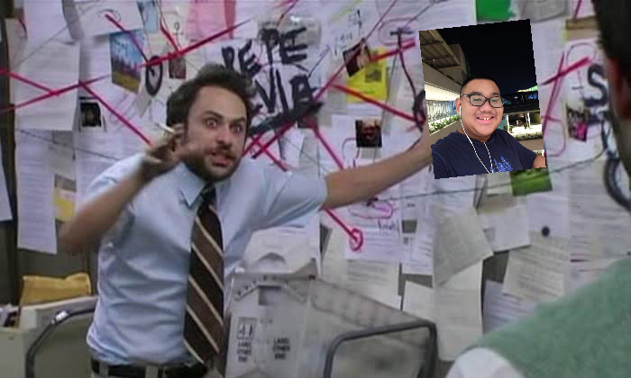

Who is Aggnuch?
October 22, 2020
A person has a lot of things that they can say, and when they do express their thoughts, they do it in such a way that they are comfortable with. I love writing down my feelings and talking about them with my friends, but not everyone fits in the same shoe as I am. In this week's journal entry, I will discuss about myself, how the five aspects of the inner self play out in my personality, and how I could further improve the connections between the five of them. By the end of this reflection, I hope you, the reader, may have a nice answer to this question: who is Aggnuch?
Before I start: Don't worry, I'll not make a test out of the details here. Just want you to be aware of what I say ;)
Let me describe a little bit of my physiological characteristics. Based on the genes of my parents, my height is shorter than expected, standing at around 160 cm. My weight can be considered an outlier as I carry 80 kg at the time of this writing. If those figures alarm you, it does alarm me as well. I am trying my best to reduce my calorie intake everyday and couple it with moderate amounts of exercise. I'm also finding better ways for me to handle my lifestyle by organizing my tasks and being more time-conscious. As the famous Ma'am Antonio once said, "physical health is essential to the human body in order to live a healthy lifestyle." That statement of hers resonated with me, by the way.
The journey to a better body has been rough for me. I had less weight last year than this year, but due to community quarantine and lack of exercise, those kilograms made a comeback in my body. My mother ane I agreed that I will start a diet that stated that I shouldn't eat anything after 6 in the evening. I have committed to that for almost a month now. During the early days of COVID, I was disciplined enough to use the stationary bike bought for me two years ago. Every time I ride on it, I would always listen to music to keep me motivated for the next half hour. I easily get distracted halfway into the exercise, so music has played a huge role in shaping my physiological self.
While we're on the topic of music, please give me this time to appreciate how much music has impacted my life. It transcends the five aspects and binds everything together to form the Aggnuch that everyone knows. Music has helped me appreciate the world around me, and has also given me insight on the harsh realities of the very same world I grew up and appreciate. It sets my mood for the day, can flip a bad day and turn it into a good one. Which leads me to talk about how I deal with emotions.
As stated in the first week, I am a talkative person, and I really really love expressing and sharing my emotions. In fact, I have this trait that I could turn any innocent topic into a discussion about my personal life. Though I know that I can't do that all the time, my emotions have helped me channel myself to the experienced I have had throughout my whole life. For some time, I have had anger issues, and I am proactively fixing myself for that. I still vividly remember some memories that showed my furious side. I remember one time that I shouted so loudly in class that a classroom two classrooms away heard me shouting. And keep in mind that our doors were closed! And also that time when one of my classmates was just playing innocent pranks on me but I got so pissed off at him that a few minutes later, I bursted into tears and spent the whole lunch break whining and crying about it.
Needless to say, I am not a perfect person. I am yet to project my feelings more effectively, in means that I don't use anger or force to do so. And yes, I do have a dark side of sudden crying. My classmates from tenth grade know me very well for that. Even I don't know when I would have a breakdown outside the classroom, it's almost like I flipped a coin and it landed on "Aggnuch shall cry today for whatever reason he has". I would always find reasons to cry, and my closest friends have worried about me since the start of the school year for my approach to hardships. And up to this day, I believe that's the reason why I haven't formed great bonds with others. However, things have gone for the better as I could now handle my feelings more effectively than back then.
When I say I haven't formed great bonds with others, I mean to those I have almost never interacted with. Probably due to fear of rejection, or even worse, dejection. But make no mistake, I have some great friends who supported me when I was at rock bottom and mountain high. To them I am infinitely thankful for always being by my side.
I consider myself an ambivert, which means that I enjoy the comfort of being by myself, and at the same time enjoying being with others. During social gatherings (pre-corona by the way), the best way to describe myself during those times is that I have my own world. I usually distance myself from the crowd and take some time to talk to myself about how surreal the experience was. I often do this during dance night, especially around the time of slow dances. I ask someone if they consent to dancing. Most of the time I get a yes response, but a no response means no, kids! In the times that I do receive a yes, then the dancing finally happens. I'm at the heat of the moment for a minute or so then tightly hug them afterwards. The whole time felt so surreal that at I didn't know how to think for a while. Sometimes there was a crowd surrounding the two of us, or the girl asks me a question I don't know how to reply to, but 100% of the time, let me establish that I was smiling. I was so over the moon that I might want to describe the whole experience as over the solar system. I couldn't even start process what was going on while we were dancing, which is why I sometimes step out of the dance floor and talk about everything that transpired during that short yet memorable time.
A slow dance with someone is indeed memorable and cherishable, and I told about dancing with someone because I wanted to illustrate how much I cherish my interactions with everyone, how small or how big of an impact they caused in my life. See how detailed I recounted a quick experience of only one or two minutes. Whether I met someone at a big event, or just bumped into each other given the circumstances that time, I'm fond of remembering and going back to all the times I have interacted with people, even just through the mind.
I have this nature of being able to remember the finest details of something, but that depends on how much it associated with me. It's a weird nuance about myself. I have this strange flex that I can recite everyone who I had a crush on in Makati Science High School, when I first developed feelings for them, and in what order they are listed because I keep track of a chronological list. But ask me to recite all of the chapters in Noli Me Tangere or El Filibusterismo and recall everything that took place in every chapter, and my brain will simply disintegrate from trying to remember what happened in the first chapter alone. I remember that a dinner and a ship were involved, respectively. That's all I know, and I'm deeply sorry to my Filipino teachers for not being familiar with the events of Jose Rizal's novels.
However, my memory skills have been put into the test, and positive results came out of them. For instance, I used to be able to remember the 118 elements, and I put them into good use as I could quickly recite electron configurations and determine which group an element was a part of. I also have a strong foundation in mathematics, which, when talking about the math lords, I am not that type who could exceed a teacher's expectations, or give the school gold medals for their mathematical abilities. I am not that type of person. My game was always mental math. I always practice my calculation skills, and refine them whenever my teachers ask the class questions requiring lots of calculation. This always happens during Sir Olops' lessons. He usually gives out problems where the fastest to answer his questions will be given a special reward. My mental skills paid off, and I always get rewards from him as a result. He has been one of my inspirations who has made my passion for mathematics more ardent than ever.
I have a lot of talents that I can use and should use not only for my personal growth. It just fascinates me as to how I could do marvelous things everyday, and how I strive to be better over time. I am starting to think that my existence is not just a coincidence that my father met my mother and made miracles nine months before I came into this world. It almost feels like I was destined to be created, and that everything great or not that I was experiencing was all pre-planned and organized by someone above, which led me to believe in a God that molded every single feature and aspect of myself. I'll be honest, I struggle with trying to attend mass every Sunday, even though it should be a habit in my religion. But everyday I try my best to live like how Jesus lived, in a way that the Bible depicted His life to be. Of course I'll never be able to walk on water, or turn water into wine, but to spread good morals and values is what I want to emulate in His ways. Along with that, I try to understand how most world religions work, and slowly learn to respect their beliefs. Many of the battles fought over the course of history have been caused by religion and strongly defending what they believe in. I solve things diplomatically and highly discourage being in fights. I highly value communication whenever resolving conflict.
With all that, it is amazing how all the five aspects of the self play out in my life. I will reiterate, I'm not perfect. Everyday spells a new opportunity for me to discover and learn more about how my human self works, and how I could use it to benefit myself, my family, my friends, and everyone around me. I hope that this entry gave more insight about myself and how I perceive everything around me. I also sincerely apologize for the sheer length of what seems like a whole editorial. I still have a lot to share, but those stories are reserved for another time. Till we see each other again, dear reader!